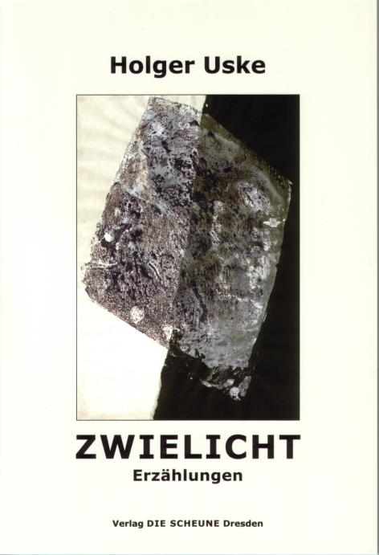
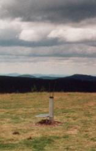

Im Jahr 2003 tritt Holger Uske erneut mit einem Erzählungsband an die Öffentlichkeit. Diesmal vereint er 23 Geschichten aus den Jahren 1999–2002 zu einem Buch und findet im Verlag „Die Scheune" Dresden einen Partner für das Projekt. Die Suhler Grafikerin Annette Wiedemann stellt freundlicherweise einen Schieferdruck als Titelgrafik zur Verfügung. Beide Künstler verbindet eine jahrelange Zusammenarbeit. Es gibt Gedichtzyklen von Uske zu Grafiken von Annette Wiedemann. Gemeinsam mit ihrem Mann gestaltete die Künstlerin auch schon das Layout zur CD „Sage es leis" aus 2001.
Holger Uskes Gestalten sind keine Überflieger, keine Weltenbummler, die dem kolorierten Abenteuer hinterher schippern. Aber geheimnisvollen Dingen sind sie auf der Spur: Schattenspiel, Zwielicht, Abschied und Flügelschlag …
Roland Guttmann zum Beispiel, mit der Stoppuhr bewaffnet, will er dem Zufall auf die Schliche kommen. Da ist dieser Mann mit dem schleppenden Gang. Einen Plastikbeutel in der Hand schiebt er sich durch die fremden Stimmen. Da schwadroniert Krawuttke über den Zivilpförtner vorm Kasernentor und da ist diese Frau, die ihren Monolog am Grab zum wirklichen Ende bringt.
Mit sparsamen, präzise gesetzten Strichen stellt Uske seine alltäglichen Helden in ihrer Unverwechselbarkeit aufs Papier, starke und weniger starke Charaktere, Treiber und Getriebene mit ihren Ansprüchen, Träumen und Illusionen. (aus dem Klappentext)

Illustration von Annette Wiedemann
Zwielicht (Titelerzählung)
Aufgetriebene Blätter. Der Boden regennass. Wind, der nur verhält, um unerwartet wieder Schirme umzustülpen, Röcke anzuheben und Hüte zu entführen. Ein gelber Ton über allem. Ein Oberton, denke ich, wie sieht seine Melodie aus. Rasche Schritte. Vielleicht der Weg zur Stadt: Fassadentheater erleben, selber spielen. Ein Schritt weist hierhin, ein anderer verharrt. Einer will in den Pfützen-Spiegel, ein nächster weicht dem Wasser aus. Sechsuhrschatten. Lichtergewirr. Und Bea ist nicht da.
Da kommt mir das klare Lampenrund gerade recht. Locklicht im Dämmer, groß genug, um Fahrzeuge von ihrer Bahn abzubringen. Um Motten wie mich – Übertreib's nicht, widerspricht mir die Stimme im Innern, die immer widerspricht, bleib mal auf'm – Na ja. Teppich wohl doch nicht ganz. Von Regen und Schaufensterauslagen, von Scheinwerfertastfingern spiegelnder Asphalt. Die Abrollgeräusche immer besser vermarkteter minderwertiger Reifen. Und überm Eingang das lichterhelle überschäumende Glas. Let's have a – Es ist viel zu früh für diesen Besuch bei Bernd. Es ist zu spät, um umzukehren. Ja, ich weiß, das vierte Pint wird morgen wieder im Schädel rühren. Morgen ist eine Erfindung von Albert Einstein. Die Zeit dehnt sich längst zum Quadrat. Meine Energietankstelle liegt heute hier hinter diesen Fenstern. Das geht doch gut ohne sie.
(aus der Titelerzählung des Bandes)
In dem Band enthalten ist auch die Erzählung „Regenzeit". Die Geschichte ist multimedial aufgearbeitet auf dieser Homepage nachzulesen unter dem Button „Links" – „Regenzeit".